Fetchmate
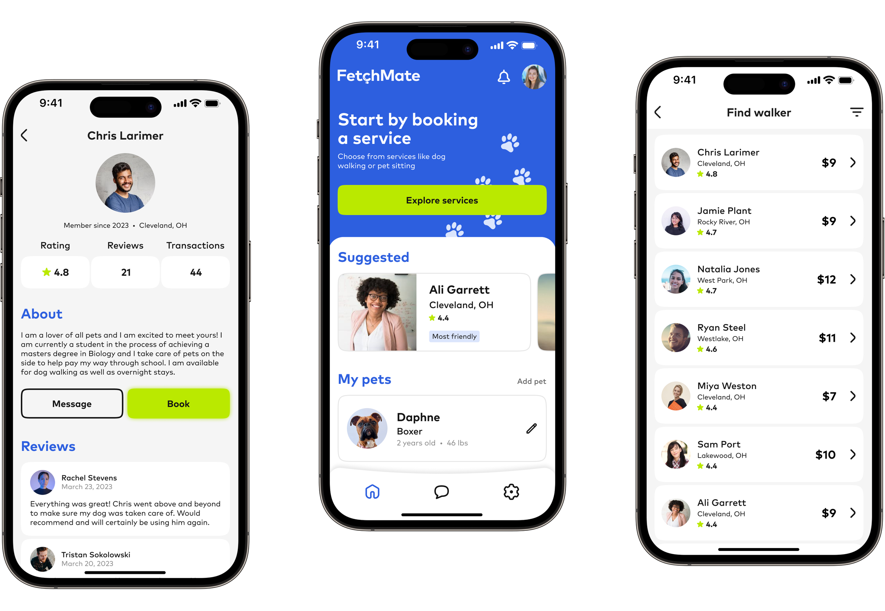
A comprehensive case study documenting the entire product design process for a pet care app, through Dribbble's certified 16-Week Product Design Course.
TIMELINE / 3 months
TOOLS / Figma, Figjam, AI
RESULTS / Successful development of a fully functioning product prototype
COURSE CERTIFICATION / Completed
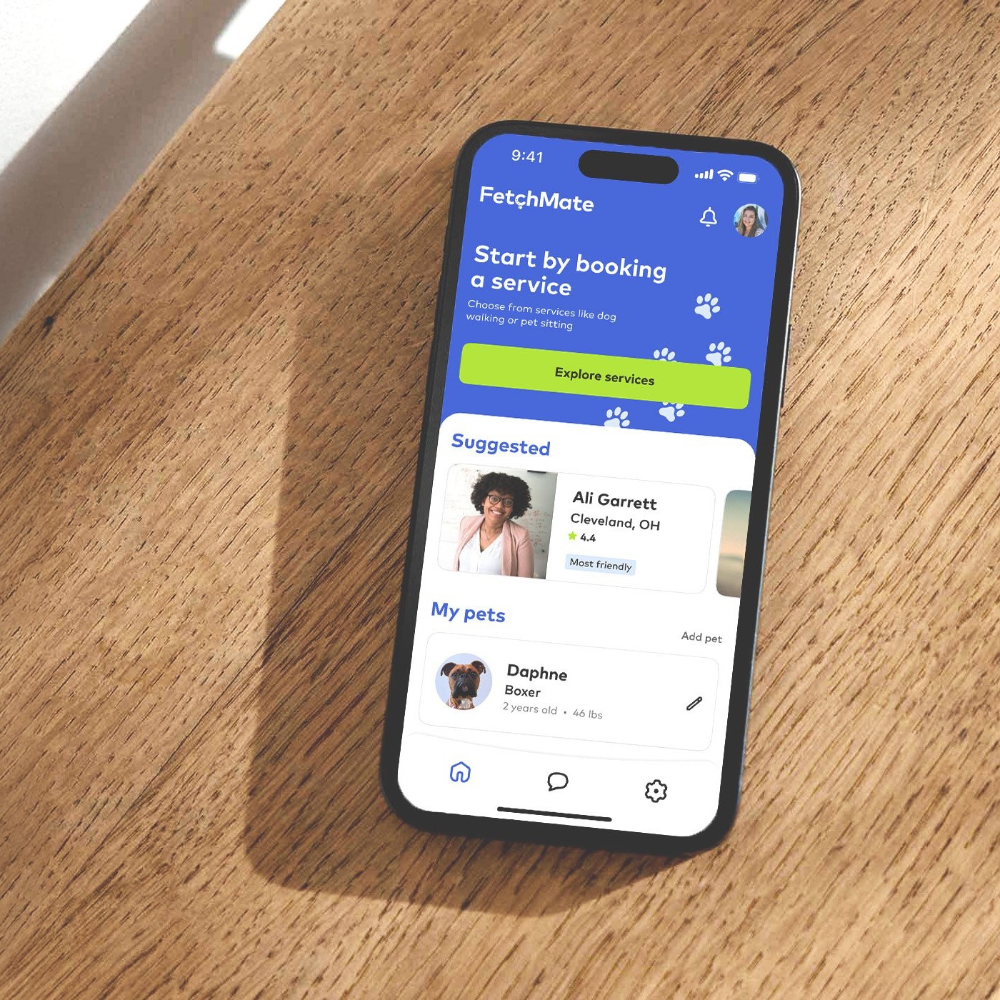
01 / Problem Statement
For this project, the goal was to create an app that connects dog owners with dog walkers and facilitate a seamless experience for users to book this type of service. The project included conducting research, building a user persona, wireframing and user testing as well as building a UI kit, brand and a fully functioning prototype.
02 / Market Research
After conducting thorough market research, I was able to define the existing products and services on the market and conclude what features were not available to users in these products. These products provide similar services like booking with walkers in your area, finding trusted and reviewed caretakers as well as communication between you and your chosen caretaker.
ROVER / Offers multiple services in addition to dog walks, but has a somewhat strenuous user flow
WAG! / Can be used to easily book dog walkers, but does not include services for other types of pets besides dogs
WALKIES / This product is focused on managing your dog walking small business and does not include a seamless dog owner user experience
LOCAL KENNELS / Convenient and available option but don't offer walking services and often aren't the most safe or healthy conditions
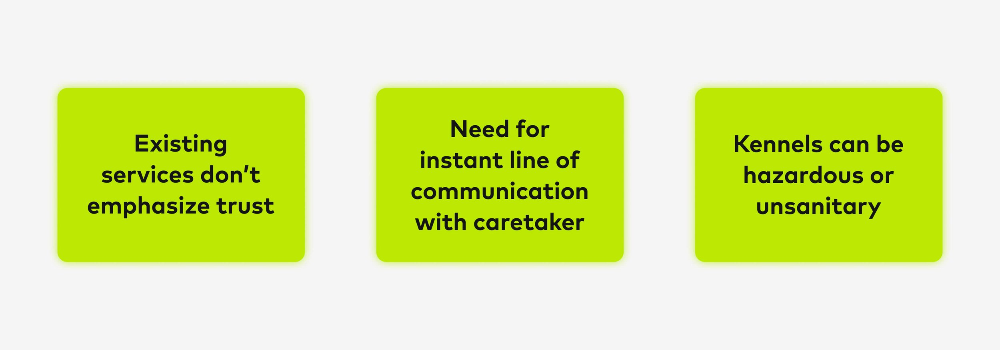
03 / User Research
The ideal users needed to be dog owners who routinely seek walking or petsitting services. After interviewing a group between the ages of 30 and 64, I determined what was most important to the user. I concluded that most users were most concerned about the health and safety of their pets and were willing to put cost aside knowing they were getting quality care. I also established that having a clear and effective line of communication between the owner and caretaker is essential.
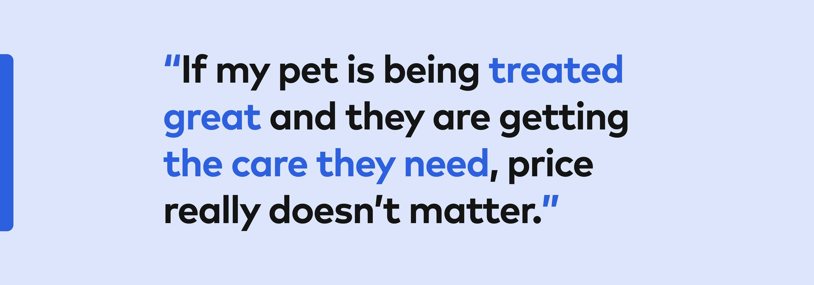
04 / User Persona
From here I was able to determine who my ideal user would be. I developed a user persona to define who the product would be for and made sure I was still appealing to this user at every checkpoint along the way.
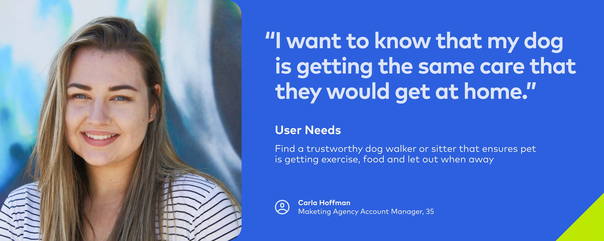
05 / User Flow
Before building any screens, I built a thorough user flow starting from the top at the main login screen all the way through to the final booking flow, making adjustments as the project progressed.
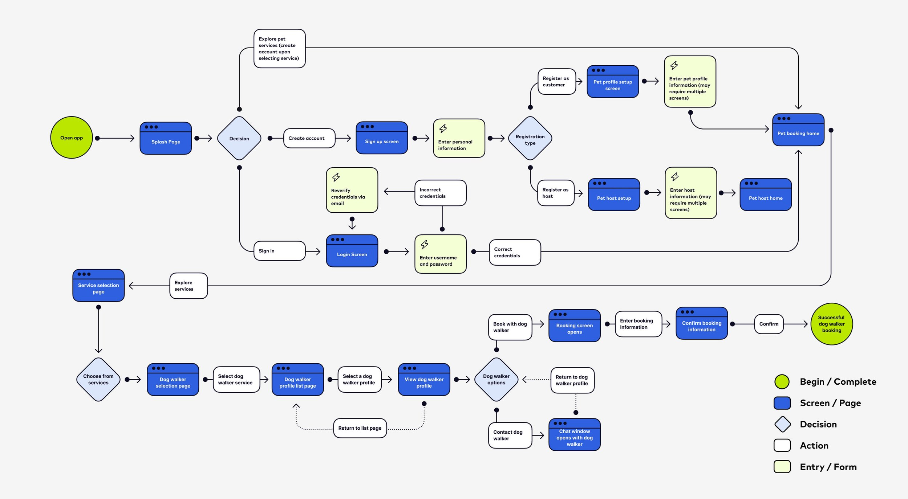
06 / Wireframe
Starting with some basic sketches, I got a sense of how some of my screens could be laid out. I then created some low fidelity wireframes around the user flow I previously built, including a main dashboard for users to start their experience from. I focused my design needs around the information I uncovered in the market and user research phases which included emphasis on communication and messaging, reviews and ratings of hosts as well as including services like pet sitting and more in addition to dog walking.
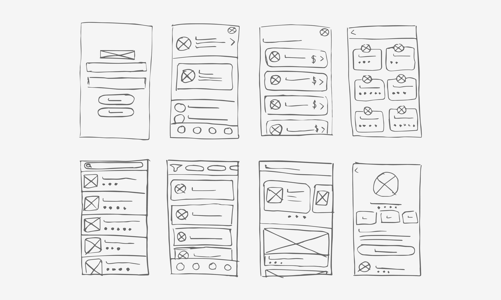
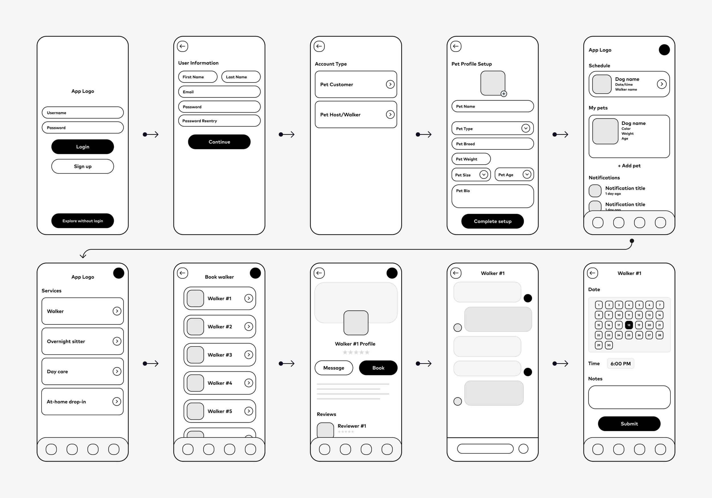
Below is an iterative representation of my design process in creating the main dashboard—from low fidelity wireframe to the finished product.
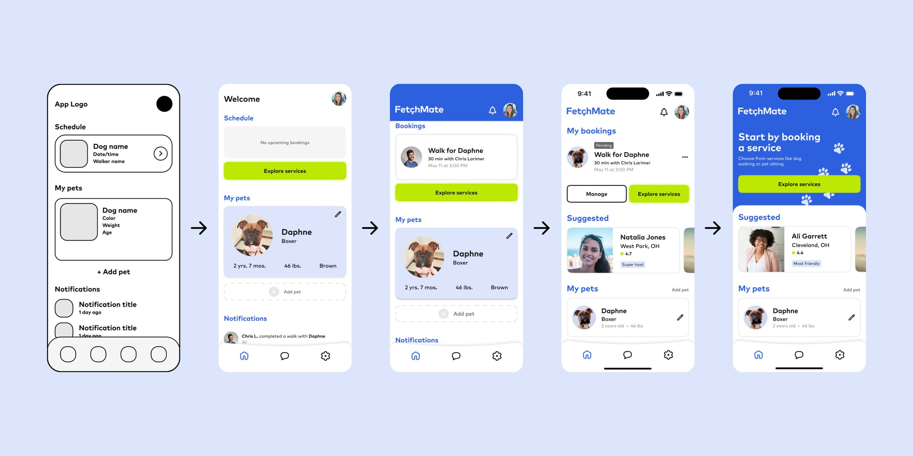
07 / Visual Design
From here I was able to complete the final prototypes of all the screens needed to get my users through the proposed flows. This was achieved by using a grid system and following a detailed design theme throughout while making iterations to the design informed through user testing.
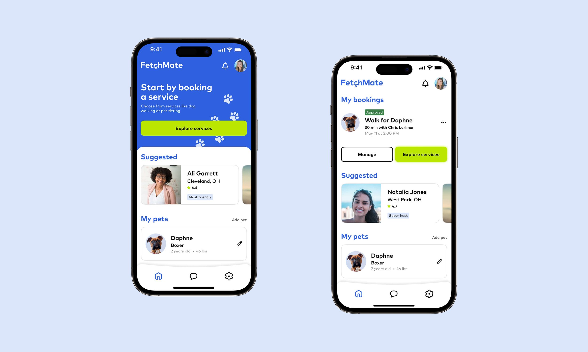
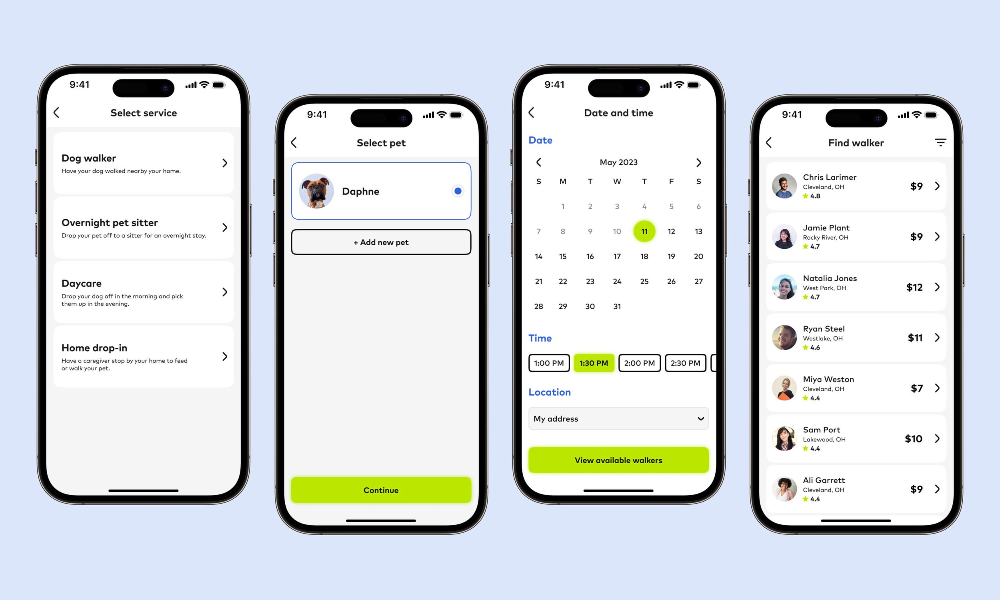
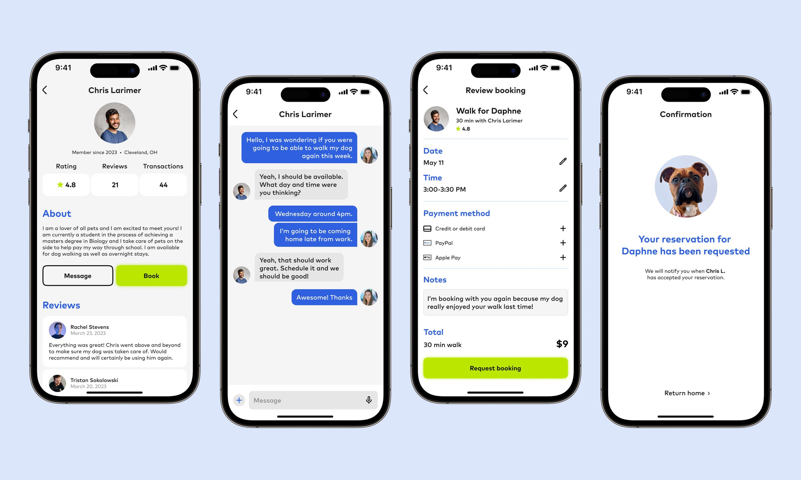
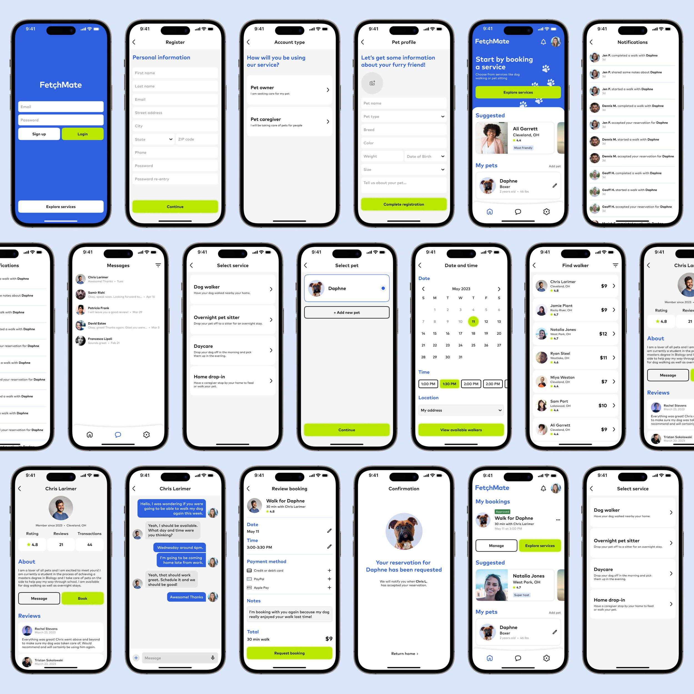
08 / Branding
Prior to the design process, I included a thorough investigation of the visual design theme I wanted to bring to the app. I created a few moodboards before landing on a concept, and from there designed a logo with a full color palette to integrate into my product. I wanted the brand to feel bright and playful, so I focused on a color palette and typography to emphasize that.
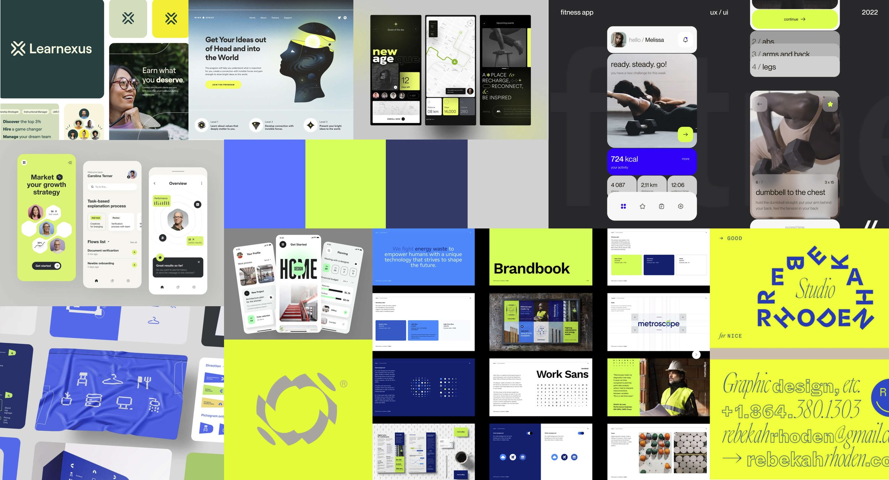
09 / UI Kit
As I was building the various screens, I was simultaneously creating a UI kit that allows for reuse of common components and interactions within the app. This includes buttons, fields, navigation, cards and more. I included a system for keeping typography consistent by developing text styles for headings and body copy. With an emphasis on WCAG accessibility standards, I also was sure to include a detailed breakdown of the entire color palette including all color pairings and their respective color contrast ratios and ratings.
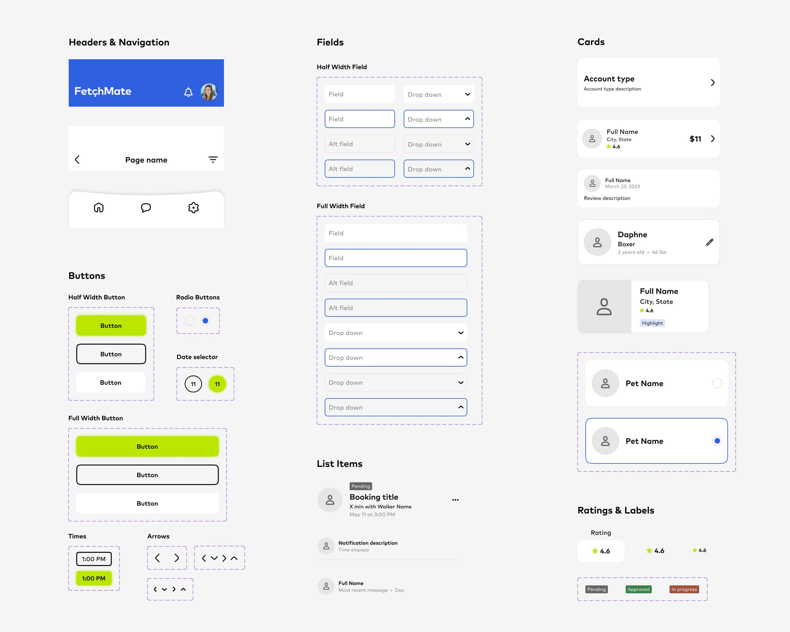
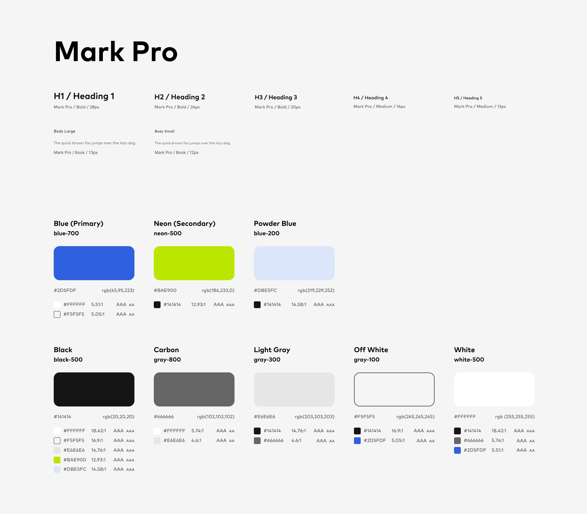
10 / User Testing
Throughout the design process, I was constantly testing the prototypes with a group of users and iterating on their problems faced. This allowed me to spot key issues in my design and revise based on these issues. In early prototypes, search priority was based on the walker, and not the time and day. Users had difficulty finding a desired time and day, having to constantly flip between walkers to find an ideal booking. To resolve this, I reordered the search flow so calendar came first and the available walkers filtered from there.
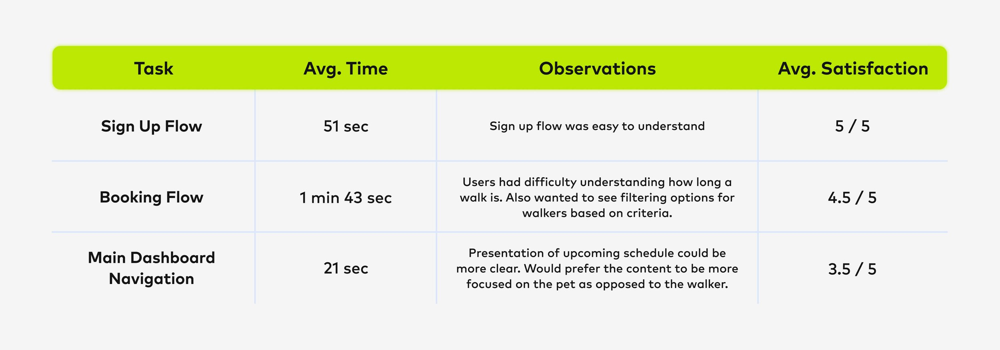
11 / Final Product
From here I was able to complete the final prototype of my product and confirm its success. After meeting all of my goals, my key learnings from the project included a deep dive into the market and user research process to build an ideal user persona as well as a dynamic user flow. I also learned how to thoroughly manage a design system using the tools provided in Figma and how to iterate my design based on feedback gathered from user testing.